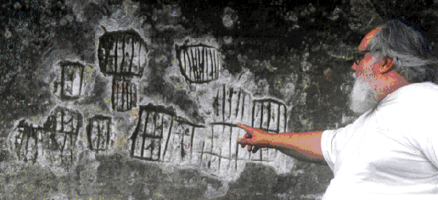
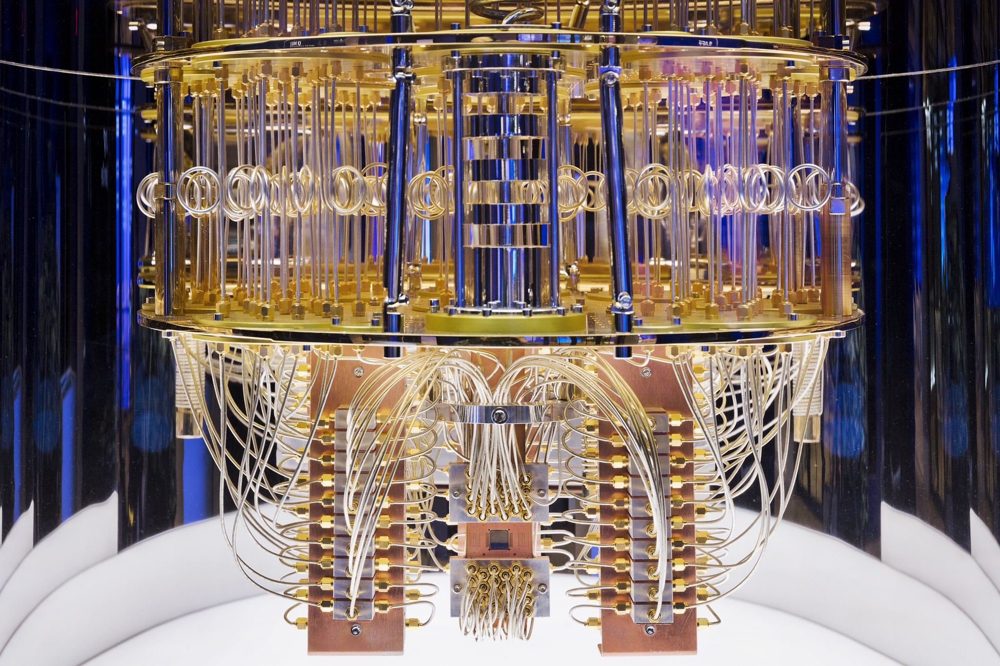

Sem sombra de dúvida, hoje, as vidas de todas as pessoas dependem da tecnologia, em todas as áreas de estudo e profissão, em momentos de lazer, no dia a dia, a tecnologia está e se faz necessária em todos os lugares. Isso se tornou ainda mais evidente com a pandemia de coronavírus, onde a tecnologia passou a ser utilizada, necessária e desenvolvida em dobro. Deve-se concluir então que saber de onde tudo isso veio é importante, saber a história da tecnologia, ou melhor, a história da informática!

Quando se vê a pré-história da informática e estuda-se todos os eventos que antecedem a criação do primeiro computador, mas que já haviam a intenção de operar como um, percebe-se que foi necessário muitas pessoas e muitos inventos para ter a base teórica necessária para a criação do primeiro computador que evoluiria até a tecnologia que se conhece hoje.
Se quiser, para contar a história da informática, pode-se voltar à época dos homens das cavernas, pois, desde aquele tempo a necessidade do homem de representar quantidades e efetuar operações matemáticas se fazia presente.
Sistema de numeração usado na pré-história. Foto em local perto de Urubici, Santa Catarina.
Apesar disso, saindo da era das cavernas para 1623, pode-se falar da primeira calculadora mecânica capaz de multiplicar inventada por Wilhelm Schickard. Em 1642 inventou-se a Pascaline, uma calculadora mecânica de Blaise Pascal. Em 1802, Joseph Jacquard, sugeriu controlar teares por meio de cartões perfurados que forneciam comandos necessários para tecelagem de padrões complicados em tecidos, sendo esta a primeira máquina programada. Em 1820 foi criada a Máquina das Diferenças de Charles Babbage, essa máquina calculava tabelas e funções sem precisar de um operador humano. Em 1833 Babbage junto com Ada Lovelace projetou a Máquina Analítica, capaz de realizar qualquer operação matemática e que, em conceito, era muito similar aos computadores atuais. Em 1820 Charles Xavier Thomas projetou uma máquina capaz de realizar as quatro operações aritméticas básicas: a ARITHMOMETER, essa foi a primeira calculadora comercializada com sucesso.
Ao longo do tempo, foram diversas contribuições de diversas pessoas para chegar à criação do primeiro computador. Hoje o computador é extremamente necessário, sendo de uso popular, sendo como ferramenta de trabalho e estudos, sendo para usos empresariais e científicos; o computador já é muito mais do que só uma máquina que calcula, mas, sim, uma máquina excepcionalmente indispensável.
Foram diversas pessoas importantes, como o Alan Turing conhecido como o pai da computação, contribuições importantes, como o importante papel da empresa de tecnologia IBM, para que chegasse as primeiras gerações de computadores e em 1946 surgiu o primeiro computador eletrônico da história: o ENIAC; dando início a primeira geração de computadores.
O que marcou a primeira geração foi as válvulas. Naquela época, os computadores funcionavam a partir de válvulas que eram acionadas para que o computador realizasse cálculos e afins.
O princípio de funcionamento das válvulas era o efeito termiônico descoberto por Thomas Edison, o inventor da lâmpada. O efeito termiônico consiste, basicamente, em aumentar a temperatura de um metal para, consequentemente, aumentar o fluxo de elétrons.
O grande problema das válvulas era que esquentavam muito, consumiam muita eletricidade e queimavam fácil.
A necessidade de substituir as válvulas deu início a segunda geração de computadores que começou em 1959 com o aparecimento dos transistores.
O transistor é composto por um coletor, uma base e um emissor, quando uma tensão elétrica é aplicada à base, o transistor “abre”, ou seja, funciona como condutor, permitindo que uma corrente elétrica flua entre emissor e coletor e alimente o circuito ao qual está ligado.
Os transistores permitiram maior velocidade aos computadores que agora eram capazes de realizar cálculos em microssegundos, os transistores também são menores, o que permite uma diminuição no tamanho do computador, isso vai contribuir para que na terceira geração os computadores começam a se popularizar.
A história da internet começa no ambiente da Guerra Fria (1945-1991) onde as duas super potências envolvidas, Estados Unidos e União Soviética, estavam divididos nos blocos socialista e capitalista e disputam poderes e hegemonias.
Com o intuito de facilitar a troca de informações, porque temiam ataques dos soviéticos, o Departamento de Defesa dos Estados Unidos (ARPA - Advanced Research Projects Agency) criou um sistema de compartilhamento de informações entre pessoas distantes geograficamente, a fim de facilitar as estratégias de guerra.
Nesse momento, surge o protótipo da primeira rede de internet, a Arpanet (Advanced Research Projects Agency Network).
Assim, no dia 29 de outubro de 1969 foi estabelecida a primeira conexão entre a Universidade da Califórnia e o Instituto de Pesquisa de Stanford. Foi um momento histórico, uma vez que o primeiro e-mail foi enviado.
Já na década de 90, o cientista, físico e professor britânico Tim Berners-Lee desenvolveu um navegador ou browser, a World Wide Web (www), a Rede Mundial de Computadores - Internet.

A partir disso, a década de 90 ficou conhecida como o "boom da internet", pois foi quando ela se popularizou pelo mundo, com o surgimento de novos browsers ou navegadores — Internet Explorer, Netscape, Mozilla Firefox, Google Chrome, Opera, Lynx — e o aumento do número de usuários, navegadores da internet, diante disso, ocorre uma grande proliferação de sites, chats, redes sociais — orkut, facebook, msn, twitter —, tornando a internet a rede ou teia global de computadores conectados.
A terceira geração começa em 1965 com a substituição dos transistores pela tecnologia dos circuitos integrados (CI). Os transístores e outros componentes eletrônicos são miniaturizados e montados em um único chip. A finalização desta geração é datada no início dos anos 70 a qual foi considerada a importância de uma maior escala de integração para o início da 4ª geração.
Principais Características:
A quarta geração de computadores caracteriza-se pelo uso do microprocessador. O microprocessador é a CPU (Central Processing Unit) dos computadores,ou seja, Unidade Central de Processamento. No início da década de 70, os CPUs possuíam a capacidade de processar por volta de 100.000 informações por segundo e foram utilizados nos primeiros micros de 8 bits. CPU – Processador central de informações. É nesta pastilha de silício que são processadas todas as informações computacionais. INTEL – Um dos maiores fabricantes de processadores do mundo.
Principais características:
Este é um computador da quarta geração
CURIOSIDADE: Você sabe de onde vem a sigla “PC” usada para designar um computador? Esta sigla vem de “Computador pessoal” que vem do inglês “Personal Computer”, por isso, PC.
As novas tecnologias que prometem deixar os PCs mais rápidos já estão em desenvolvimento e a expectativa é que nos próximos anos elas desembarquem nas mãos dos consumidores. A lista é longa e inclui novidades como processadores em camadas, armazenamento em DNA, circuitos ópticos e computadores quânticos.
Um computador quântico é um dispositivo que executa cálculos fazendo uso direto de propriedades da mecânica quântica, tais como sobreposição e interferência. Teoricamente, computadores quânticos podem ser implementados e o mais desenvolvido atualmente, o D-Wave Two, trabalha com 512 qubits de informação. O principal ganho desses computadores é a possibilidade de resolver algoritmos num tempo eficiente, alguns problemas que na computação clássica levariam tempo impraticável (exponencial no tamanho da entrada), como por exemplo, a fatoração em primos de números naturais. A redução do tempo de resolução deste problema possibilitaria a quebra da maioria dos sistemas de criptografia usados atualmente. Contudo, o computador quântico ofereceria um novo esquema de canal mais seguro. Computadores quânticos são diferentes de computadores clássicos tais como computadores de DNA e computadores baseados em transistores, ainda que estes utilizem alguns efeitos da mecânica quântica.
Henrique Cardosos e Rafael Rodrigues